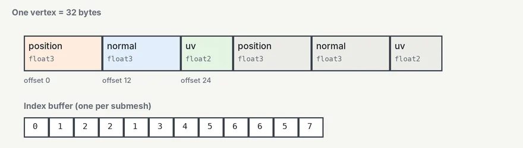

Caricare i modelli
Mesh#
examples/Sources/11-ModelLoading, si esegue con swift run ModelLoading. Scarica tutti gli esempi oppure guarda come eseguirli.MetalKit handed us MTKMesh objects. This chapter looks inside one, draws it, and wraps it together with its materials in a small type of our own.
Model loading in C++
Model I/O and MetalKit's mesh types are not part of metal-cpp. The C++ version of this section loads Wavefront OBJ files with the single-header library tinyobjloader and builds the Metal buffers by hand. The ideas are the same: a model is meshes, a mesh has one vertex buffer and one index buffer per material, and a material is values plus textures. To load USD from C++, call Model I/O from a small Objective-C++ file, as the window code in Project Setup does for AppKit, or convert the model to OBJ or glTF.
Inside an MTKMesh#
| Property | Contents |
|---|---|
vertexBuffers |
An array of MTKMeshBuffer, each with a buffer (MTLBuffer) and an offset into it. |
vertexDescriptor |
The Model I/O vertex descriptor of the data. |
submeshes |
An array of MTKSubmesh. |
vertexCount |
Number of vertices. |
and each MTKSubmesh has:
| Property | Contents |
|---|---|
indexBuffer |
An MTKMeshBuffer with the indices. |
indexCount, indexType |
How many indices and whether they are 16 or 32 bit. |
primitiveType |
Usually .triangle. |
The offsets are important. The allocator may place several meshes in one large MTLBuffer, so always pass the offset when binding.

Drawing a mesh#
func draw(_ mesh: MTKMesh, with encoder: MTLRenderCommandEncoder) {
for (index, vertexBuffer) in mesh.vertexBuffers.enumerated() {
encoder.setVertexBuffer(vertexBuffer.buffer, offset: vertexBuffer.offset, index: index)
}
for submesh in mesh.submeshes {
encoder.drawIndexedPrimitives(type: submesh.primitiveType,
indexCount: submesh.indexCount,
indexType: submesh.indexType,
indexBuffer: submesh.indexBuffer.buffer,
indexBufferOffset: submesh.indexBuffer.offset)
}
}
struct Submesh {
MTL::Buffer* indexBuffer;
NS::UInteger indexCount;
int materialIndex;
};
void draw(MTL::Buffer* vertexBuffer, const std::vector<Submesh>& submeshes, MTL::RenderCommandEncoder* encoder) {
encoder->setVertexBuffer(vertexBuffer, 0, 0);
for (const Submesh& submesh : submeshes) {
encoder->drawIndexedPrimitives(MTL::PrimitiveTypeTriangle,
submesh.indexCount,
MTL::IndexTypeUInt32,
submesh.indexBuffer,
0);
}
}
With the layout from the previous chapter there is one vertex buffer, bound at slot 0, which leaves slot 1 for uniforms as before.
The pipeline state needs the matching Metal vertex descriptor. Either reuse the one you built by hand or derive it from the mesh:
pipelineDescriptor.vertexDescriptor = MTKMetalVertexDescriptorFromModelIO(mesh.vertexDescriptor)
// The vertex descriptor is the one we built by hand in the previous chapter.
pipelineDescriptor->setVertexDescriptor(vertexDescriptor);
Materials#
Each MDLSubmesh has an optional MDLMaterial. A material is a bag of properties looked up by semantic:
let property = mdlSubmesh.material?.property(with: .baseColor)
// tinyobj stores one material index per face; we use the first face's material for the shape.
const tinyobj::material_t& material = materials[shape.mesh.material_ids[0]];
A property can be a plain value or a texture, so we handle both. A small material type for the Phong shader from the lighting section:
struct MeshMaterial {
var baseColor = Float3(1, 1, 1)
var baseColorTexture: MTLTexture?
var specularTexture: MTLTexture?
var shininess: Float = 32
}
extension MeshMaterial {
init(_ material: MDLMaterial?, loader: MTKTextureLoader) {
guard let material else { return }
if let property = material.property(with: .baseColor) {
if property.type == .float3 {
baseColor = property.float3Value
}
baseColorTexture = Self.texture(for: property, loader: loader, sRGB: true)
}
if let property = material.property(with: .specular) {
specularTexture = Self.texture(for: property, loader: loader, sRGB: false)
}
}
private static func texture(for property: MDLMaterialProperty,
loader: MTKTextureLoader,
sRGB: Bool) -> MTLTexture? {
let options: [MTKTextureLoader.Option: Any] = [
.generateMipmaps: true,
.SRGB: sRGB,
]
switch property.type {
case .texture:
guard let mdlTexture = property.textureSamplerValue?.texture else { return nil }
return try? loader.newTexture(texture: mdlTexture, options: options)
case .URL:
guard let url = property.urlValue else { return nil }
return try? loader.newTexture(URL: url, options: options)
default:
return nil
}
}
}
struct MeshMaterial {
simd::float3 baseColor = {1, 1, 1};
MTL::Texture* baseColorTexture = nullptr;
MTL::Texture* specularTexture = nullptr;
float shininess = 32;
};
MeshMaterial makeMaterial(const tinyobj::material_t& material, const std::string& directory,
MTL::Device* device, MTL::CommandQueue* queue) {
MeshMaterial result;
result.baseColor = {material.diffuse[0], material.diffuse[1], material.diffuse[2]};
result.shininess = material.shininess > 0 ? material.shininess : 32;
// OBJ materials reference image files next to the .mtl file.
if (!material.diffuse_texname.empty()) {
result.baseColorTexture = loadTexture(device, queue, (directory + material.diffuse_texname).c_str());
}
if (!material.specular_texname.empty()) {
result.specularTexture = loadTexture(device, queue, (directory + material.specular_texname).c_str());
}
return result;
}
The texture case covers images embedded in USDZ archives (after asset.loadTextures()), and the URL case covers OBJ files that reference images on disk next to the .mtl file.
The sRGB flag
Color textures are stored in sRGB, data textures such as specular or normal maps are not. Until the Gamma Correction chapter, pass false for everything so the output matches earlier chapters.
A Mesh type#
Bundle the Metal mesh with one material per submesh:
struct Mesh {
let mtkMesh: MTKMesh
let materials: [MeshMaterial]
init(mdlMesh: MDLMesh, mtkMesh: MTKMesh, loader: MTKTextureLoader) {
self.mtkMesh = mtkMesh
let submeshes = mdlMesh.submeshes as? [MDLSubmesh] ?? []
self.materials = submeshes.map { MeshMaterial($0.material, loader: loader) }
}
func draw(with encoder: MTLRenderCommandEncoder, fallback: MTLTexture) {
for (index, vertexBuffer) in mtkMesh.vertexBuffers.enumerated() {
encoder.setVertexBuffer(vertexBuffer.buffer, offset: vertexBuffer.offset, index: index)
}
for (submesh, material) in zip(mtkMesh.submeshes, materials) {
encoder.setFragmentTexture(material.baseColorTexture ?? fallback, index: 0)
encoder.setFragmentTexture(material.specularTexture ?? fallback, index: 1)
encoder.drawIndexedPrimitives(type: submesh.primitiveType,
indexCount: submesh.indexCount,
indexType: submesh.indexType,
indexBuffer: submesh.indexBuffer.buffer,
indexBufferOffset: submesh.indexBuffer.offset)
}
}
}
struct Mesh {
MTL::Buffer* vertexBuffer = nullptr;
std::vector<Submesh> submeshes;
std::vector<MeshMaterial> materials; // indexed by Submesh::materialIndex
void draw(MTL::RenderCommandEncoder* encoder, MTL::Texture* fallback) const {
encoder->setVertexBuffer(vertexBuffer, 0, 0);
for (const Submesh& submesh : submeshes) {
const MeshMaterial& material = materials[submesh.materialIndex];
encoder->setFragmentTexture(material.baseColorTexture ? material.baseColorTexture : fallback, 0);
encoder->setFragmentTexture(material.specularTexture ? material.specularTexture : fallback, 1);
encoder->drawIndexedPrimitives(MTL::PrimitiveTypeTriangle,
submesh.indexCount,
MTL::IndexTypeUInt32,
submesh.indexBuffer,
0);
}
}
};
A fallback texture#
A shader that samples a texture must have one bound. For materials without a texture, bind a 1×1 white texture, which multiplies to nothing:
func makeSolidTexture(device: MTLDevice, color: SIMD4<UInt8>) -> MTLTexture {
let descriptor = MTLTextureDescriptor.texture2DDescriptor(pixelFormat: .rgba8Unorm,
width: 1, height: 1,
mipmapped: false)
let texture = device.makeTexture(descriptor: descriptor)!
var pixel = color
texture.replace(region: MTLRegionMake2D(0, 0, 1, 1),
mipmapLevel: 0,
withBytes: &pixel,
bytesPerRow: 4)
return texture
}
MTL::Texture* makeSolidTexture(MTL::Device* device, uint8_t r, uint8_t g, uint8_t b, uint8_t a) {
MTL::TextureDescriptor* descriptor = MTL::TextureDescriptor::texture2DDescriptor(
MTL::PixelFormatRGBA8Unorm, 1, 1, false);
MTL::Texture* texture = device->newTexture(descriptor);
const uint8_t pixel[4] = {r, g, b, a};
texture->replaceRegion(MTL::Region::Make2D(0, 0, 1, 1), 0, pixel, 4);
return texture;
}
This is also your first hand-made texture: a descriptor, makeTexture, and replace to upload bytes.